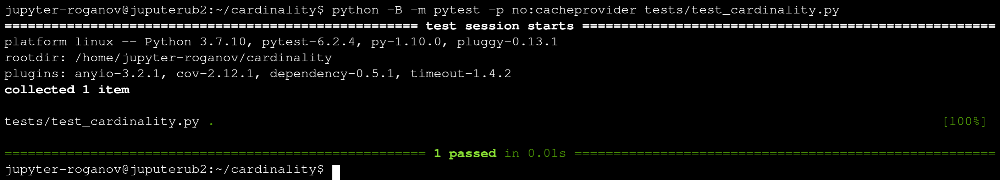
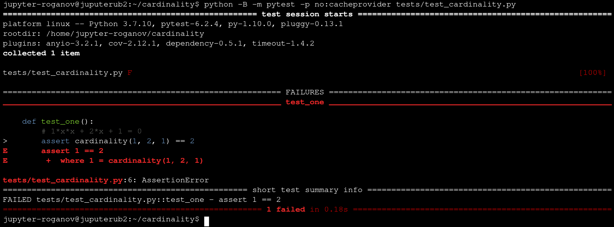
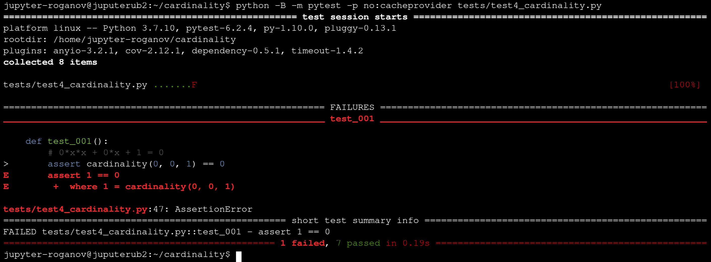

v.3.2, 5 декабря 2021 года
Является очевидным тот факт, что тестировать программы полезно. Ведь даже умение конструировать теоретически правильные программы (а этому можно учиться и можно научиться!) не гарантирует никого от совершения ошибок в процессе написания кода.
Чуть позже мы узнаем, что тесты помогают при создании программ, но пока наша задача — познакомиться с техникой тестирования и научиться писать простые тесты к несложным программам.
Для тестирования Python-программ мы будем использовать pytest — специализированное программное обеспечение (framework). Именно его сейчас применяет для указанной цели большинство активно использующих Python программистов. При этом нашей целью будет лишь самое поверхностное знакомство с технологией тестирования программ на простейших примерах.
Напишите программу на языке Python, которая читает со стандартного ввода три целых числа
При решении этой задачи важно понимать, что уравнение
Как назвать файл, в котором будет размещена программа? Не следует
недооценивать значимость этого вопроса. Когда у вас в одной директории
(папке) окажется десяток файлов с программами, то только «говорящие»
имена позволят быстро находить нужную программу. Поскольку в качестве
расширения файла с программой на языке Python обычно используется py, то в качестве полного имени можно захотеть выбрать, например, Мощность.py. Так, однако, поступать не рекомендуется.
Не используйте русских букв в именах файлов!
Гораздо лучше подобрать правильный английский термин, которым в данном случае будет слово cardinality, так как по-английски «мощность множества» записывается как Cardinality (см. соответствующую статью в Википедии). Следовательно, мы назовём файл с программой cardinality.py.
Подумав немного, можно предложить такой вариант программы:
Файл cardinality.py
a = int(input("Введите a -> "))
b = int(input("Введите b -> "))
c = int(input("Введите c -> "))
if a != 0:
# Уравнение является квадратным
d = b * b - 4 * a * c
if d < 0:
print(0)
elif d > 0:
print(2)
else:
print(1)
else:
# Уравнение не является квадратным
if b == 0 and c == 0:
print("continuum")
else:
print(1)Рекомендуется создать на сервере Jupyter Hub директорию cardinality, перейти в неё и выполнять там все нижеописанные действия, используя редактор vim.
Запуская эту программу, легко убедиться, что по крайней мере иногда она работает:
jupyter-roganov@juputerub2:~/cardinality$ python cardinality.py
Введите a -> 1
Введите b -> 2
Введите c -> 1
1
jupyter-roganov@juputerub2:~/cardinality$Однако, гарантировать её правильность, конечно же, нельзя. Вполне возможно, что что-то в ней и не так. Именно тесты весьма полезны для выяснения данного вопроса.
Перед тем, как писать тесты, необходимо сначала модифицировать саму программу. Во-первых, следует отделить содержательную часть решения от операций ввода данных и вывода полученных результатов. Оформить содержательную часть программы в виде функции в нашем случае можно так:
Файл cardinality2.py
def cardinality(a, b, c):
if a != 0:
# Уравнение является квадратным
d = b * b - 4 * a * c
if d < 0:
return 0
elif d > 0:
return 2
else:
return 1
else:
# Уравнение не является квадратным
if b == 0 and c == 0:
return "continuum"
else:
return 1
a = int(input("Введите a -> "))
b = int(input("Введите b -> "))
c = int(input("Введите c -> "))
print(f"Мощность множества решений уравнения равна {cardinality(a,b,c)}.")Функция, которую мы назвали cardinality, принимает три
аргумента и возвращает вычисленный ею результат. При запуске этой
программы интерпретатор языка Python сначала прочитает и обработает
определение метода (функции) cardinality, а уже затем
начнёт выполнять действия, связанные с вводом коэффициентов уравнения. В
процессе выполнения последней строки будет вызвана функция cardinality, а возвращённое ей значение напечатано.
Полученный код, однако, имеет один важный недостаток: в теле функции cardinality целых пять операторов return, что считается очень плохим стилем программирования. Поэтому лучше изменить программу так, как это показано ниже:
Файл cardinality3.py
def cardinality(a, b, c):
if a != 0:
# Уравнение является квадратным
d = b * b - 4 * a * c
if d < 0:
result = 0
elif d > 0:
result = 2
else:
result = 1
else:
# Уравнение не является квадратным
if b == 0 and c == 0:
result = "continuum"
else:
result = 1
return result
a = int(input("Введите a -> "))
b = int(input("Введите b -> "))
c = int(input("Введите c -> "))
print(f"Мощность множества решений уравнения равна {cardinality(a,b,c)}.") Главное преимущество полученной программы — это возможность вызывать функцию cardinality несколько раз с различными аргументами.
Написанную функцию можно вызывать и из другого файла. Её может использовать даже человек, работающий на ином компьютере. При условии наличия у него соответствующих прав доступа и определённых знаний, конечно.
Создадим новый (второй) файл, в котором будут присутствовать только
ввод коэффициентов, вызов функции из первого файла и вывод результата.
Как назвать этот файл? Использоваться он будет для запуска программы,
поэтому ему можно дать имя run.py. Команда
cp cardinality3.py run.py позволяет скопировать содержимое файла cardinality3.py в файл run.py, после чего там нужно лишь удалить лишние строки:
Файл run.py
a = int(input("Введите a -> "))
b = int(input("Введите b -> "))
c = int(input("Введите c -> "))
print(f"Мощность множества решений уравнения равна {cardinality(a,b,c)}.")Скопировать файл можно, конечно, и без использования утилиты
cp.
Запустив получившуюся программу, мы обнаружим, что она запрашивает три числа, но затем выдаёт ошибку:
jupyter-roganov@juputerub2:~/cardinality$ python run.py
Введите a -> 1
Введите b -> 2
Введите c -> 1
Traceback (most recent call last):
File "run.py", line 4, in <module>
print(f"Мощность множества решений уравнения равна {cardinality(a,b,c)}.")
NameError: name 'cardinality' is not defined
jupyter-roganov@juputerub2:~/cardinality$Смысл этой диагностики вполне ясен — исполняющая система не сумела найти определение функции cardinality. Почему? Потому что мы не указали, где его искать. Нам уже известна директива import. В данном случае она же позволит подключить нужный файл. Скопируем файл run.py в run2.py и добавим в него директиву import:
Файл run2.py
from cardinality3 import cardinality
a = int(input("Введите a -> "))
b = int(input("Введите b -> "))
c = int(input("Введите c -> "))
print(f"Мощность множества решений уравнения равна {cardinality(a,b,c)}.") Запустим программу ещё раз. Теперь функция cardinality вызывается! Но почему-то после вывода результата программа вновь пытается что-то ввести:
[roganov@fractal programms]$ python run2.py
Введите a -> 1
Введите b -> 2
Введите c -> 1
Мощность множества решений уравнения равна 1.
Введите a ->При попытке вызова написанной в файле cardinality3.py функции cardinality из другого файла (run2.py) возникает проблема, связанная с двойным вводом данных. От этого легко избавиться, оставив в файле cardinality3.py только определение функции cardinality. Тогда, однако, нельзя будет увидеть работу данной функции без использования другого файла, а это не слишком удобно.
Для решения возникшей проблемы создадим файл cardonality4.py со следующим содержимым:
Файл cardinality4.py
def cardinality(a, b, c):
if a != 0:
# Уравнение является квадратным
d = b * b - 4 * a * c
if d < 0:
result = 0
elif d > 0:
result = 2
else:
result = 1
else:
# Уравнение не является квадратным
if b == 0 and c == 0:
result = "continuum"
else:
result = 1
return result
if __name__ == "__main__":
a = int(input("Введите a -> "))
b = int(input("Введите b -> "))
c = int(input("Введите c -> "))
print(f"Мощность множества решений уравнения равна {cardinality(a,b,c)}.")Код, находящийся после строки
if __name__ == "__main__":,
выполняются тогда и только тогда, когда имя файла, указываемого при
запуске программы, совпадает с именем файла, содержащего эту строку. Для
подключения файла cardinality4.py необходимо, конечно, исправить в файле run2.py первую строку
from cardinality3 import cardinality
на
from cardinality4 import cardinality.
Запустив исправленный файл командой python run2.py, убеждаемся, что теперь программа ведёт себя ожидаемым образом.
Прежде всего следует проверить, что pytest установлен, для чего можно выполнить, например, команду pytest --version. Если всё хорошо, то результат будет примерно таким:
jupyter-roganov@juputerub2:~/cardinality$ pytest --version
pytest 6.2.4
jupyter-roganov@juputerub2:~/cardinality$Если же по каким-то причинам пакет pytest окажется не установленным, то следует выполнить команду pip install -U pytest. Подробнее об этом и многом другом можно прочитать в самом начале руководства по pytest.
На сервере Jupyter Hub непривилегированный пользователь не имеет права устанавливать дополнительные программы и пакеты.
Хотя pytest позволяет размещать тесты в том же самом файле, в котором находится тестируемая программа, так обычно не поступают. Существуют подробные рекомендации (Good Integration Practices) по тому, где должны располагаться файлы с тестами. В нашем ознакомительном курсе мы будем следовать лишь части из них.
Мы будем размещать тесты в поддиректории с именем tests в файле с именем, которое получается из имени файла с тестируемой программой путём добавления символов test_. В рассматриваемом нами случае в поддиректории tests мы создадим файл test_cardinality.py. Запуск тестов мы будем выполнять из той директории, где находится файл с тестируемой программой с помощью команды python -B -m pytest -p no:cacheprovider tests/test_cardinality.py.
Эту команду рекомендуется скопировать с помощью мыши, а затем просто
вспоминать, используя возможности оболочки shell (Ctrl/R), и
модифицировать нужным образом.
Столь сложную команду мы рекомендуем использовать для того, чтобы текущая директория включалась список тех директорий, где ведётся поиск необходимых файлов (чтобы находился файл
cardinality.py), а также не создавались служебные директории с дополнительными результатами запуска тестов и результатами компиляцииpy-файлов (содержащие байт-кодpyc-файлы).
Вот как должен выглядеть файл test_cardinality.py для того, чтобы с его помощью проверялось утверждение «функция cardinality правильно работает на входных данных a,b,c = 1,2,1»:
Файл tests/test_cardinality.py
from cardinality4 import cardinality
def test_one():
# 1*x*x + 2*x + 1 = 0
assert cardinality(1, 2, 1) == 1Файл содержит единственную функцию с именем test_one, которая утверждает (assert), что вызов функции cardinality с параметрами (1,2,1) должен вернуть значение 1. Запуск теста с помощью команды python -B -m pytest -p no:cacheprovider tests/test_cardinality.py даёт следующий результат:

Мы видим, что тест выполнен успешно, «прошёл» (passed). Если строку assert cardinality(1,2,1) == 1 заменить на assert cardinality(1,2,1) == 2, то результат запуска теста окажется совершенно иным:

Теперь утверждение оказалось неверным, случился «провал» (failure) теста.
Обратите внимание на тот факт, что имена функций, которые будут выполнены в результате запуска
pytest, обязаны начинаться с префиксаtest_.
Бо́льшая часть утверждений, используемых в тестах, имеет следующий формат:
assert actual op expected
Здесь используются такие обозначения:
assert — переводится как «утверждается, что»;actual — это реально вычисляемое (актуальное) значение;expected — ожидаемое значение с которым производится сравнение;op — какая-то операция сравнения.Существует достаточно большое количество различных операций сравнения, но в данный момент времени недостаточное знание языка Python не позволяет нам даже понять многие из них. Пока нам будут полезны следующие операции:
проверка на идентичность:
assert a is b
этот тест успешно проходит, если a и b являются ссылками на один и тот же объект; так, неверно, что 1 is 1.0;
проверка на эквивалентность:
assert a == b
этот тест проходит, если a и b имеют одинаковое значение (возможно, после выполнения некоторых преобразований); например, 1 == 1.0;
«обычные» сравнения:
assert a != b
assert a < b
assert a > b
assert a <= b
assert a >= b
Для сравнения действительных чисел вместо непосредственного сравнения на равенство (
==) следует использовать сравнение их округлённых значений, например,assert round(a,7) == round(b,7).
сравнение типов:
assert type(a) == b, например, assert type(1.23) == floatпроверки истинности:
assert a is True или просто assert a
assert a is False или assert not a
В процессе изучения нашего курса мы будем знакомиться с другими видами утверждений, используемых в тестах.
Научиться правильно записывать (техническая сторона) утверждения о программе можно очень быстро. Сложнее понять, какие именно утверждения следует включать в тесты. Ведь если программист неправильно понимает задачу и пишет неправильный код программы, то что помешает ему написать и неправильные тесты (тесты, которые будут якобы говорить о правильности программы)?
Какие утверждения нам следует написать для рассматриваемой задачи о мощности множества решений? Перебрать абсолютно все возможные варианты входных данных невозможно в силу бесконечности их количества. Если же пропустить хотя бы один, то может оказаться, что именно в этом случае программа и не работает. Из этого, кстати, следует, что чаще всего с помощью тестов нельзя доказать правильность программы.
Так какие же утверждения включать в тесты? Желательно перебрать все существенно различные случаи входных данных, а чтобы это сделать, необходимо правильное понимание существа решаемой задачи.
Наша программа, находящая мощность множества решений, умеет в качестве ответа выдать continuum, поэтому логично добавить соответствующее утверждение в тест:
Файл tests/test2_cardinality.py
from cardinality4 import cardinality
def test_one():
# 1*x*x + 2*x + 1 = 0
assert cardinality(1, 2, 1) == 1
def test_two():
# 0*x*x + 0*x + 0 = 0
assert cardinality(0, 0, 0) == 'continuum'В большинстве уже имеющихся утверждений параметры принимали значения 0
и 1. Почему бы нам не попробовать перебрать все возможные наборы из
нулей и единиц? Таких наборов, как известно, восемь
Файл tests/test3_cardinality.py
from cardinality4 import cardinality
def test_000():
# 0*x*x + 0*x + 0 = 0
assert cardinality(0, 0, 0) == 'continuum'
def test_001():
# 0*x*x + 0*x + 1 = 0
assert cardinality(0, 0, 1) == 0
def test_010():
# 0*x*x + 1*x + 0 = 0
assert cardinality(0, 1, 0) == 1
def test_011():
# 0*x*x + 1*x + 1 = 0
assert cardinality(0, 1, 1) == 1
def test_100():
# 1*x*x + 0*x + 0 = 0
assert cardinality(1, 0, 0) == 1
def test_101():
# 1*x*x + 0*x + 1 = 0
assert cardinality(1, 0, 1) == 0
def test_110():
# 1*x*x + 1*x + 0 = 0
assert cardinality(1, 1, 0) == 2
def test_111():
# 1*x*x + 1*x + 1 = 0
assert cardinality(1, 1, 1) == 0Давайте сразу же подумаем над важнейшим вопросом: все ли существенные варианты входных данных мы рассмотрели? Как это понять?
Что представляет собой соотношение
При ненулевых значениях
Переставим уже написанные нами утверждения в порядке убывания степени уравнения и добавим комментарии:
Файл tests/test4_cardinality.py
from cardinality4 import cardinality
# Квадратное уравнение с положительным дискриминантом
def test_110():
# 1*x*x + 1*x + 0 = 0
assert cardinality(1, 1, 0) == 2
# Квадратное уравнение с нулевым дискриминантом
def test_100():
# 1*x*x + 0*x + 0 = 0
assert cardinality(1, 0, 0) == 1
# Квадратное уравнение с отрицательным дискриминантом
def test_101():
# 1*x*x + 0*x + 1 = 0
assert cardinality(1, 0, 1) == 0
def test_111():
# 1*x*x + 1*x + 1 = 0
assert cardinality(1, 1, 1) == 0
# Линейное уравнение
def test_010():
# 0*x*x + 1*x + 0 = 0
assert cardinality(0, 1, 0) == 1
def test_011():
# 0*x*x + 1*x + 1 = 0
assert cardinality(0, 1, 1) == 1
# Вырожденный случай 1
def test_000():
# 0*x*x + 0*x + 0 = 0
assert cardinality(0, 0, 0) == 'continuum'
# Вырожденный случай 2
def test_001():
# 0*x*x + 0*x + 1 = 0
assert cardinality(0, 0, 1) == 0Запуск даёт не вполне ожидаемый результат:

Одно из утверждений оказалось ложным: наша программа выдаёт неверный результат при
Внимательно посмотрим на код программы (файл cardinality4.py).
Легко обнаружить следующее: мы ошибочно считали, что если уравнение не
является квадратным, то мощность множества его решений равна либо
бесконечности, либо единице. Мы «потеряли» тот самый случай, который
встретился в тесте.
Исправим ошибку:
Файл cardinality4.py
def cardinality(a, b, c):
if a != 0:
# Уравнение является квадратным
d = b * b - 4 * a * c
if d < 0:
result = 0
elif d > 0:
result = 2
else:
result = 1
else:
# Уравнение не является квадратным
if b != 0:
# Уравнение является линейным
result = 1
else:
if c == 0:
result = "continuum"
else:
result = 0
return result
if __name__ == "__main__":
a = int(input("Введите a -> "))
b = int(input("Введите b -> "))
c = int(input("Введите c -> "))
print(f"Мощность множества решений уравнения равна {cardinality(a,b,c)}.")Запустив тест повторно, убеждаемся, что теперь все утверждения оказываются истинными.
Напишите на языке Python функцию cardinality_cube, определяющую по трём заданным целым числам cardinality_cube должна принимать 3 аргумента a, b, c, и возвращать мощность множества действительных решений.
Напишите на языке Python функцию is_intersect, определяющую, пересекается ли заданный действительными координатами его концов отрезок на плоскости с единичной окружностью is_intersect должна иметь 4 аргумента x1, y1, x2, y2, первые два из которых определяют начало отрезка, а последние — его конец. Программа должна правильно работать на возможно более широком множестве входных данных и быть максимально эффективной.
Напишите на языке Python функцию is_inside, определяющую, лежит ли заданная точка плоскости x0, y0, x1, y1, x2, y2, x3, y3, первые два из которых являются координатами точки